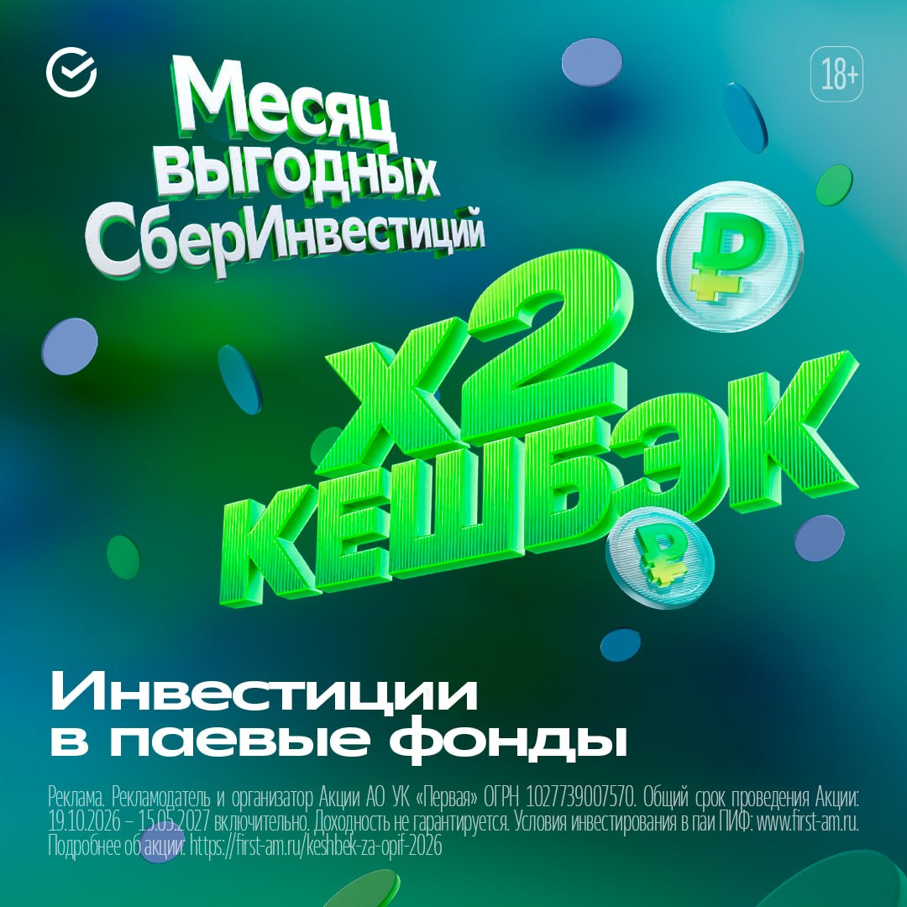

Москвач • Новости Москвы
@moscowach
Москвач • Новости Москвы
@moscowach
Месяц выгодных СберИнвестиций продолжается. Сейчас вы можете поучаствовать в акции инвестируя в паевые фонды и получить кешбэк в размере двойной лучшей месячной доходности среди них его выплатят на карту в виде кешбэка.

💚 Месяц выгодных СберИнвестиций продолжается. Сейчас вы можете поучаствовать в акции, инвестируя в паевые фонды, и получить кешбэк в размере двойной лучшей месячной доходности среди них — его выплатят на карту в виде кешбэка.
Как участвовать:
Участвовать!
Реклама. Рекламодатель и организатор Акции АО УК «Первая» ОГРН 1027739007570. Общий срок проведения Акции: 19.10.2026 – 15.05.2027 включительно. Вся информация об акции тут. Ознакомьтесь с обязательной информаций о ПИФ
Как участвовать:
1. До 22 ноября включительно инвестируйте равные суммы в паи двух фондов из специальной подборки — минимум по 10 000 рублей.
2. Не совершайте других операций (погашение и т.д.) с паями этих фондов до 31 марта 2027 года включительно.
3. Следите за соревнованием фондов: в апреле 2027 года их доходности сравнят.
4. До 15 мая 2027 года вам поступит кешбэк в размере двойной наибольшей месячной доходности фонда-победителя по вашим инвестициям (максимум — 30 000 рублей).
В акции участвует только сумма инвестиций, превышающая сумму, выведенную из-под управления УК «Первая» с 19 сентября 2026 года.
Участвовать!
Реклама. Рекламодатель и организатор Акции АО УК «Первая» ОГРН 1027739007570. Общий срок проведения Акции: 19.10.2026 – 15.05.2027 включительно. Вся информация об акции тут. Ознакомьтесь с обязательной информаций о ПИФ